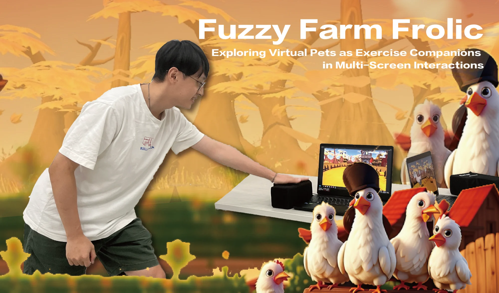
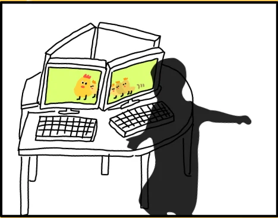
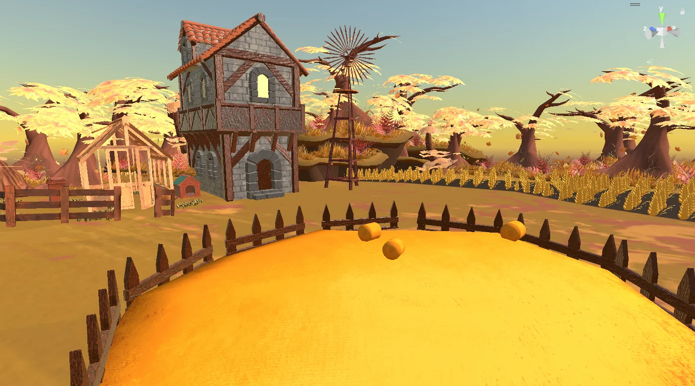
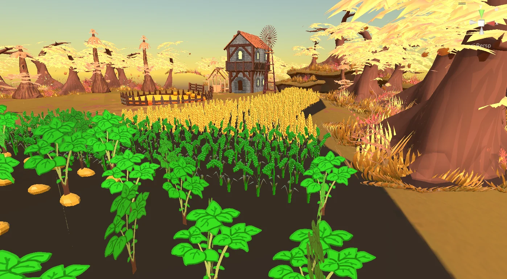

Fuzzy Farm Frolic
A pet that gets kids moving
Our goal is to combine simple gameplay to let children enjoy the warmth of having a pet as a companion and encourage physical activity.
Hens on every screen
The idea is that when children return home from school, upon entering the house, they'll find hens and eggs appearing on different screens according to the children's positions. Subsequently, the children will take on the role of a farmer, taking away eggs when the hens aren't paying attention.
Scenario
{{ st.t }}

The landscape


Radar and screens
We'll set up multiple screens and buttons (keyboards, etc.), along with millimeter-wave radar to detect the player's position, allowing the hens to turn towards the screen where the player is located. Meanwhile, Players will need to compete with the hens in reaction time, using the latency of the hens as a benchmark for their own reaction speed.
Yu-Chih Chou, Pei-Cih Zeng, Yu-Hsuan Lee, Jih-Hsuan Peng, Kuan-Ning Chang, Jin-Cai Xu